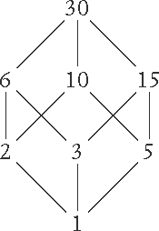
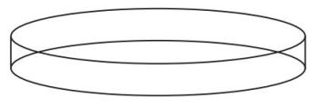
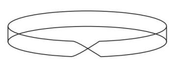
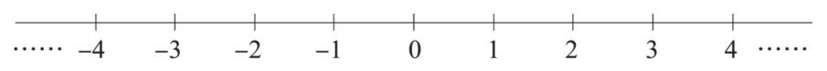
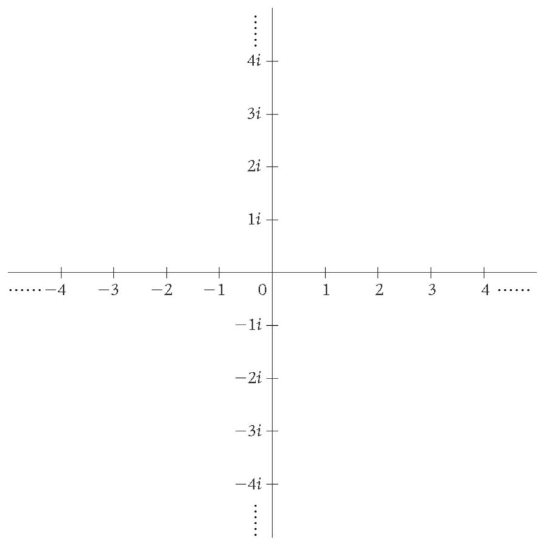
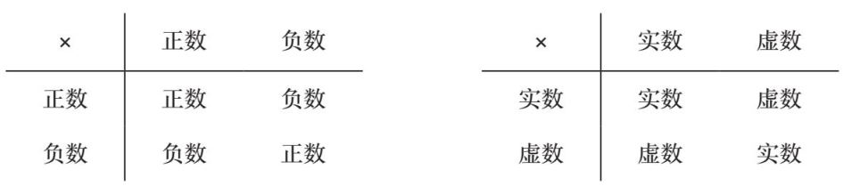
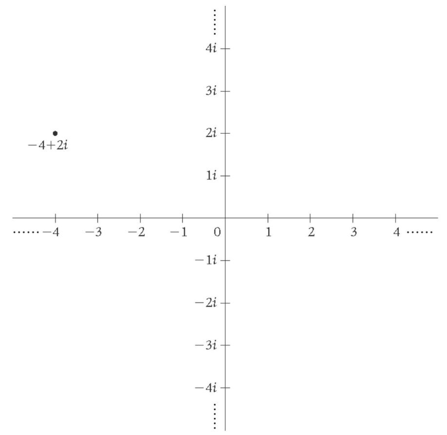

意式千层面意式千层面
意式千层面意式千层面原料
波隆那肉酱
千层面面皮
意式白酱
磨碎的帕玛森奶酪
方法
1. 在浅烤盘上抹一层波隆那肉酱。在肉酱上铺一层千层面面皮，然后再抹一层意式白酱。
2. 将步骤1重复两遍，确保最后的步骤是抹一层意式白酱。
3. 在最上面撒一层磨碎的帕玛森奶酪，将烤箱温度设定为180°C，烤制45分钟，或直到它看起来已经十分美味即可。
当你看到这个食谱的时候，你也许会觉得“意式千层面，这个太简单了”，或者，你也可能觉得“意式白酱？这要怎么做啊？”这个食谱非常简单，原因在于它假设你已经知道怎么做波隆那肉酱、意式白酱和千层面面皮了。如果这是一个从零开始教你做意式千层面的食谱的话，它就一点儿也不简单了——它会包含一张很长的原料表和很多的步骤。
针对不同水平的烹饪者，食谱可能会很不相同。有些食谱面向经验丰富的专业厨师，另一些面向严肃的业余烹饪爱好者，还有一些食谱则是给还在学习基本技巧的初学者准备的。范畴论强调我们思考问题的情境，而不只是事物本身。情境包括我们现在对哪些细节感兴趣，我们的基本假设是什么，以及哪些元素还需要进一步拆分。就像上面那个意式千层面的食谱一样，其中意式白酱被视为一种“基本”原料。在某些情境中，数字5被视为一个基本元素，而在另外一些情境里，它就不再是基本元素了。在自然数（1、2、3、4、5、6……）的情境里，数字5有一些特别的性质：它只能被1和5整除，也就是说，它是一个质数。但在有理数（分数）的情境里，它可以被很多数除。比如，5除以10等于1/2，5除以2等于2又2/1。数字的性质取决于我们放置它们的情境。
将人置于家庭情境中
最近，我在聚会上遇到一个人，在我们聊了一会儿之后，他对我说：“你有没有哥哥或者弟弟？我猜你肯定有。”我回答说我没有，然后问他为什么觉得我一定有哥哥或者弟弟。他答道：“因为你不害怕跟又高又帅的男生讲话。”
而在另一个聚会上，有另一个人曾跟我说：“你这么自信，我猜你肯定是独生子女。”他也猜错了。但他的话让我想起了《007：大战皇家赌场》中我最喜欢的一个场景，其中詹姆斯·邦德第一次遇到薇斯帕·林德，两人在火车上唇枪舌剑时，邦德冷酷地断定林德一定是一个孤儿，而林德也同样冷酷地揣度邦德：“既然你的第一个联想是孤儿，那我猜你自己肯定是孤儿。”
因此，我猜测那个觉得我是独生子女的人自己就是独生子女。于是，在那场聚会上，我把自己想象成薇斯帕·林德，然后将我的猜测告诉了他。事实证明，我猜对了。
在我们刚认识一个人时，想了解他们的家庭、童年、家乡是一件很自然的事。有些人觉得这些问题很无趣，没有意义，或者认为这类问题冒犯了自己，因为他们认为这些基本事实并不能给别人留下关于他们现在是一个怎样的人的准确印象。
但实际上，这些提问和回答都发生在人与人初次交流这个情境中，而非孤立地发生。人之所以为人而区别于动物的一个关键就是我们与同类互动的方式。一部名人传记如果不包含传主的家庭、朋友以及人际关系方面的描述就会显得十分无趣。在一个不涉及其他人的情境中孤立地研究一个人的性格几乎是不可能的。
同样地，范畴论也强调作为研究对象的事物所处的具体情境，而非只研究事物本身的特性。
这就像我们为数字30的因数所绘制的“格子图”一样，用一张图表示因数间的相互关系比仅仅把所有的因数列出来有趣多了。

这是一种把因数置于具体情境的方法。在下一章，我们会具体讨论为什么研究事物之间的关系是一种把事物置于具体情境的好方法。
如果你还记得最大公因数和最小公倍数这两个概念的话，你也许会注意到在上面这张图中，某个数字与同一行的其他数字以及上下行和它相连的数字之间的关系存在着一些规律。
将人置于职业情境中
有一次，在一个聚会中，我决定做一个实验：我拒绝告诉任何人我的职业是什么。因为告诉别人你是一个数学家会引发各种奇怪的回应。有些人会害怕，然后很快抽身离开；另一些人则会立即试图证明他们自己是多么“聪明”；还有一些人则试图藐视我。曾经有一个人的回应是：“那你之后准备做什么呢？”而我当然回答说，我想一辈子做数学家。
这场荒唐的对话是这样的：
他：哦，你不会找到工作的。
我：其实我已经有工作了。
他：我是说，你不会找到一个永久性的工作的。
我：但我其实已经有一个永久性的工作了。
他：是吗，在中小学里教数学之类的？
我：在大学做老师。
另一个人在发现我是数学家之后则开始质疑我的可信性。我们的对话是这样的：
他：你是说，你在银行工作？
我：不是，我在大学工作。
他：只是教课吗？
我：教课和做研究。
他：你有博士学位吗？
我：有。
他：你在哪里拿的博士学位？
我：剑桥大学。
他：哦，英国的博士学位很好拿，它们并不算什么。
我只好再次把自己想象成薇斯帕·林德，然后揣度这个人肯定是一个失败的数学家。结果我又一次猜对了——他没能成功地在法国拿到数学的博士学位，转而去银行工作了。而第一个人则是一位小学数学老师。
还有一次，与我对话的那个人脱口而出：“你是说，你的工作就像《给数学家的范畴论》（Categories for the Working Mathematician）这本书写的那样吗？”事实上，当时我刚开始研究范畴论，并且非常想拥有这本十分重要的书，它是范畴论的创建者之一桑德斯·麦克兰恩写的。但这本书在当时已经绝版了，到处都找不到，而这个人碰巧有一本。他在几年前还是学生的时候买过一本，但后来他不再研究数学了，于是他很快就答应把这本书寄给我。
不得不说，有时候把自己放在职业情境中还是有好处的。
有时，一个数学对象可能有好几种功能，而其中一种功能相较于其他功能，能够为我们提供一个更容易理解这个数学对象的情境。就像一个人可能有两份工作，而其中的一份工作比另一份更能说明他的性格特质一样。比如某个人可能既是业务经理，也是莎莎舞老师。
这里有一个数学的例子。数字1的“功能”可以是充当乘法的单位元。也就是说，1乘以任何一个其他数字都不会改变那个数字。然而，这一关于1的功能并不能告知我们任何关于这个应用情境的信息，因为不管什么数字乘以1都会得到这个结果。
数字1还有另一个“功能”，就是如果你不断地给1加上1，你就会得到所有的自然数：1、2、3、4、5……用数学的语言来说，就是1生成了自然数。这个关于1的功能就与自然数情境密切相关。
通过将人置于不同的情境来认识人
在你建立了一段新的情侣关系之后，去见对方的朋友总是被视为一件大事（除非你早就认识对方的朋友了）。随着网络约会的迅速发展，这件事变成了一个更严肃的问题。在网上结识新的人就像完全脱离实际情境地会面，这与通过共同的朋友、同样的兴趣或是共同的经历来认识一个人完全不同。它和你在工作场合交朋友这种情况有些类似，因为总会有某个时刻是你第一次见到对方与他的生活朋友而非工作同事在一起。
人们在不同的情境下可能会表现得非常不同。在工作和非工作场合表现不同是很正常的，哪怕只是在工作时更有所保留，而在非工作时更放松自在。在我工作的大部分时间里，我都会相对有意地隐藏自己的个性，避免自己因为身为一个在男性主导领域的女性这件事引来太多的注意。我会尽量表现得去女性化，因为我的女性身份可能会被认为是阻碍我成为一个出色的数学家的不利因素。
但人们和不同的朋友在一起时，表现也可能会有所不同。你和有些人成为朋友可能是因为你们长期生活在一起——你和他们一起长大，那段共同的经历把你们联系在一起，即使表面上看你们已经没有太多的共通之处了。毕竟人们最终都会有各自不同的生活。
你和有些人成为朋友可能是因为你们距离很近——他们碰巧经常出现在你的日常生活中。也许你每天上班都会见到他们，也许他们是你的邻居，也许你每周都会在健身房、莎莎舞课或是读书会遇到他们，也许他们的孩子和你的孩子是朋友，也许你跟他们每天搭同一辆公交车上班。比如我，我就在我每天搭乘的火车上交到了几个朋友。
而你和另一些人成为朋友则可能是因为彼此的吸引力。你跟他们有共通之处——不是那些一目了然的地方，而是那些潜藏在内心深处的东西。我和世界范围内的许多范畴论数学家建立了深厚的友谊，虽然我和他们中的大部分人从未在同一个城市、国家，甚至同一个半球生活过。
无论如何，我想说的是，当你与这些不同类型的朋友在一起时，你可能会表现得不同。你们也许会讨论不同的事情，以不同的方式讨论，与他们在不同类型的地点见面。那么，哪一个才是“真正”的你呢？是你在家庭中表现出来的样子吗？我们中的很多人与家人在一起时就像重新变成了青少年，我们扮演着青少年时期就在扮演的角色，并且反复遭遇这个时期所遭遇的挫败。有时，我们不得不承认我们很难脱离这些角色。
那么，“真正”的你是你与“彼此吸引”的朋友在一起时所表现出来的样子吗？这个问题就好像在问，当你喝醉了酒，说了一些你在清醒时不会说的话的时候，你到底是更接近还是更远离你最真实的样子？你说的这些话是更贴合你的本心，还是只不过是在发泄情绪？
范畴论无意回答哪一个才是“更真实”的你这个问题。我们会在整数和分数的情境中研究数字5，但我们并不会评判哪一个才是真正的数字5。
• 在自然数（1、2、3、4……）的情境里，5是一个质数，也就是说，它只能被1和它本身整除（而且它本身不等于1）。它没有加法逆元或者乘法逆元。
• 在整数（……-3、-2、-1、0、1、2、3……）的情境里，5有加法逆元，就是-5。也就是说，如果你把5和-5相加，你就会得到加法单位元0。但5没有乘法逆元。
• 在有理数（分数）的情境里，5有乘法逆元，也就是1/5。也就是说，如果你把5和1/5相乘，你就会得到乘法单位元1。在这个情境中，5不再是质数了，因为它能被很多数字整除。比如，5能被1/2整除。
• 在一个一圈有6小时的钟的算数情境（模6运算）里，5实际上是这个记数系统的生成元（generator）。如果你重复地给5加上5，你就会得到这个系统中的每一个数字。你可以亲自试一试。要记得这个系统中只有0、1、2、3、4、5这几个数字，每次你得到6，就要把它视为0。所以5+5=10，其实也就是4。4+5=9，也就是3。如果你继续这样加下去的话，在这之后你就会得到2，然后是1，再然后是0，这就说明5确实生成了这个记数系统的所有数字。与之相对，5显然不能生成所有的自然数，因为如果你一直重复加5这个步骤的话，你就会得到5、10、15……，即你只会得到5的倍数。
因此我们看到，数字5在不同的情境下有不同的特性。范畴论强调的是，在讨论一个问题时，你需要注意这个问题所处的情境，这一点非常重要。在下一章我们会看到，范畴论凸显情境的方式是强调事物之间的关系而非只是描述它们各自的固有特性。这是因为，就像我们刚刚看到的，即便是对于简单如5这样的数字，它的“固有特性”也没有那么的固有。
你也许会好奇，还有哪些其他数字可以作为“6个小时的钟”这一记数系统的生成元。1当然是可以的。但如果我们试着给2不断地加2，我们只会得到2、4、0、2、4、0……，所以我们无法得到这个系统中的奇数。
对于3，我们会得到：
3、0、3、0、3、0……
对于4，我们会得到：
4、2、0、4、2、0……
所以3和4也不能充当这个系统的生成元。因此，是否可以作为生成元是一个比较特殊的特性。
在不同的情境下，事物会呈现完全不同的样貌
在脱离具体的情境时，人们看起来往往会和你想象的大不相同。比如，指挥家通常比我想象的要矮很多，因为你只见过他们站在一个有一定高度的指挥台上，以一种绝对权威的姿态指挥乐队的演出。而学生们通常比我想象的高很多，因为在我与他们接触的时候，他们一般在教室里坐着，只有我自己站在讲台上，并且我是权威的一方。
有一次，我在伦敦的一间酒吧里看到阿森纳足球俱乐部的成员走了进来——整个足球队的成员和全部的随行人员。我正在那里做一些数学研究，没错，我的确会时不时地在酒吧里研究数学，因为我喜欢跟人群待在一起，尤其喜欢跟开心的人群待在一起。
总之，我坐在酒吧里，正在用笔在我的黑色笔记本上写下我的每个想法，而就在此时，一大群穿着足球服的人走了进来。我本人对足球并不了解，也没有认出他们的球衣，只是看着这些身材颀长、略显笨拙的年轻人（其中大部分看起来像是来自地中海），以及一些跟随他们左右、明显是负责照看他们的年长者走了进来。那些年轻人直接乘电梯去了楼上的酒店，而那些年长者则来到酒吧。当时我想的是：“他们肯定是一些来英国访问的欧洲青年足球队队员。他们能住在这么漂亮高档的酒店里真是挺幸运的！”
我并没有想太多，而是继续做我的数学研究。直到他们中的一个人来到酒吧，跟我搭讪。
“你在研究化学吗？”他问道，同时盯着我的笔记本看。我解释说我是一个数学家。然后我意识到，他现在站得离我很近，因而我终于看清了他球衣上的字：阿森纳。
但我仍然没有意识到他真的是阿森纳的球员……你也许会觉得我太蠢了，一个阿森纳球员已经站在我面前了而我还是没能认出来。但是……人们也常常会穿写着“大卫·贝克汉姆”的球衣走来走去，而这并不意味着他们都是大卫·贝克汉姆啊！总之，我对他说出了我至今难忘的一句经典台词：“呃，那么你是某支……足球队的吗？”
“是的，它叫作阿森纳。”这个人十分友善地回答道。然后他又补充了一句：“它是一支英超球队。”
我一下子回想起刚刚那些瘦高的、穿着便装的、听话地乘电梯前往各自酒店房间的年轻人。他们都是百万富翁，而且每一个都是国际明星！要知道，他们刚刚完全不在他们通常所处的情境之中。
数学里也存在着一些类似的概念，它们在某些情境中平淡无奇，而在另外一些情境中则非常激动人心。一个典型的例子是莫比乌斯环，它可以被视为一条两端被粘起来的纸带，只不过这张纸带不是被直接粘成一个普通的圆柱体：

而是将其中的一端翻面然后再粘起来：

这是一个非常激动人心的曲面，因为它只有一个面。你可以试着做一个这样的纸环，然后给其中一个面涂色。你会发现你可以一直涂下去，哪怕纸带本身已经翻了一面也不会造成阻碍，并且最终你会回到起点。此时，你看起来好像是涂满了“两个面”，但实际上你的笔自始至终都没有离开过纸面。这是一个特别令人激动的数学对象。更棒的是，你可以把一个甜甜圈做成莫比乌斯环的形状，然后试着在上面涂奶油芝士。你会发现，虽然你所做的只是在面包的一面涂奶油，但你最后会把“两个面”都涂满，因为它其实只有一个面。
然而，从拓扑学（或者橡皮泥）的角度来看，莫比乌斯环就没有那么有趣了，因为它和一个圆圈是“一样的”：如果你有一个橡皮泥做的普通的圆圈（环形），你就可以通过挤压、揉捏的方式把它变成一个莫比乌斯环，而并不需要把它弄破或是粘上一块新的橡皮泥。你需要一点点地把这块橡皮泥弄平，并且要一边弄平一边扭转它。（这可能不太容易想象，所以你可以试着亲自动手做一做；如果你手头没有橡皮泥的话，你可以试着将差不多等量的水和面粉混合起来做成面团来代替橡皮泥。）所以，对于拓扑学而言，莫比乌斯环是一个有趣的工具，但它本身并不是一个激动人心的概念。
严格来说，这种差别的存在源于我们在不同情境中会用不同的方式来描述“相同”这个概念。在拓扑学里，“相同”指的是在不破坏、不添加橡皮泥的前提下完成变形，这种相同也被称为“同伦等价”（homotopy equivalence）。所以，用数学术语来说，莫比乌斯环和圆圈是同伦等价的。这个结论很有用，但可能并不能让人满意，因为莫比乌斯环比单纯的圆圈有趣多了。
我们可以用一种更复杂的数学结构来描述这个问题，这种数学结构叫作“向量丛”（vector bundle）。在本书的前面，我们曾经想象过一支可以在空中任意画画的魔法笔。试着想象一下，现在，有人发明了一种笔画更粗的魔法笔，它的笔尖本身就是一条线段而不再是一个点。然后想象你用这样一支笔在空中画画，那么你将可以在空中画出曲面。是不是很棒？就像在空中挥舞一把光剑，只不过它还可以留下痕迹。
现在，想象一下用这把光剑在空中画一个圆，你画出的曲面就是“圆上的向量丛”。它指的是，对于圆上的每个点，你现在都有了一个附着于其上的向量，也就是光剑在画过那个点时覆盖在那个点上的一条线段。
关键在于，当你在空中画圆的时候，你是可以随意转动光剑的。你可以用跑一圈的方式来画这个圆。只需要在开头和结尾让你的光剑垂直于地面，你所画的这个圆圈的头和尾就可以连接起来。如果你的光剑自始至终垂直于地面，且剑头向上，那么你在跑完一圈之后就会画出一个圆柱体。但如果你在最开始的时候让光剑的剑头向上，但是在跑圈的过程中渐渐把剑头放低，直到结尾时让剑头指向地面（剑的重心高度始终保持不变），最终将头和尾衔接起来。 这样一来，你就画出了一个莫比乌斯环，虽然你仍然是用跑一圈的方式画出来的。这个问题的拓扑学理解是，在两种情况下，你都只是跑了一个圈，因此拓扑学不能分辨这两次光剑画圆的区别。但是向量丛结构捕捉到了在跑圈过程中你的手臂的转动，因此它可以分辨这两次光剑画圆的区别。
这样一来，你就画出了一个莫比乌斯环，虽然你仍然是用跑一圈的方式画出来的。这个问题的拓扑学理解是，在两种情况下，你都只是跑了一个圈，因此拓扑学不能分辨这两次光剑画圆的区别。但是向量丛结构捕捉到了在跑圈过程中你的手臂的转动，因此它可以分辨这两次光剑画圆的区别。
这里有一个简单的例子，用来解释如何通过观察某事物和其他事物的关系来了解它。
我在想一个数字。如果我给它加上2，则结果就等于8。我想的是什么数字？
这个问题并不是很难，你可以很快计算出答案是6（我最喜欢的数字）。我们再试试下面这个问题：
我在想一个数字：
1. 它是一个正数。
2. 如果减去8，则结果是负的。
3. 如果除以3，则结果是一个整数。
4. 如果它和它自己相加，则结果是一个两位数。
我想的是什么数字？
是的，答案还是6。我显然并不是一个很有创意的人。不过，我想强调的论点还是那个：你可以通过了解某事物和其他事物的关系来了解这个事物。这个关于我最喜欢的数字的例子也许看起来很傻，但我只是想用这两种不同的描述来证明我的论点。（是的，这个例子的确可能是那种会让他人认为数学没有用的例子。但有些例子存在的目的并不是“有用”，而是“说明问题”。）
我举这个例子的目的在于再次说明范畴论重视事物间的关系胜于事物本身的固有特性。
一个简单的例子是数轴这个概念。数字1、2、3……的关键特性不是它们叫什么名字，而是它们是按什么顺序出现的。无论它们叫什么名字，只要这些名字（或符号）总是按同样的顺序出现，它们就是同一类事物。因此，把它们写成一排就是合理的：
借助这种方式，我们就凸显了它们之间的关系，并且将它们固定在了一个专属于它们的位置上。我们可以用很多不同的方法来推广这个情形。如果我们允许数轴显示所有的实数（包括有理数和无理数），我们就可以填满1、2、3……之间的空白，并且数轴会“永远”向左右两个方向延伸下去。我们不能把它们真的都画出来，但我们可以想象一下：

现在让我们回想一下我在第六章介绍过的虚数，以i代表，其他的虚数都是i的倍数，如2i、3i、4i，以此类推。这些数字也可以画在一个数轴上。事实上，我们可以想象数字ai，其中a为任意实数，所以我们也可以填满这条数轴上的所有空白。但注意，不要把这条数轴和实数数轴搞混了，因为它们完全不同。我们通常会垂直而非水平地画这条虚数数轴：

你也许会很自然地想，那么这两条数轴所分割的空白空间是什么？为了找寻答案，我们可以换一个问题来问：我们可以依据群的公理对虚数进行加法和乘法运算吗？加法是没问题的，因为我们会得到诸如2i+3i=5i之类的答案。因为关于i的加法就像关于苹果、猴子或其他东西的加法一样：2个加3个等于5个。
那么如果我们尝试做乘法呢？我们已经知道了，i×i=-1，而-1不是虚数。所以根据群的公理，我们就遇到了麻烦。那么2i×2i呢？如果我们假设一般的乘法法则对于虚数运算成立的话，我们就可以说：
2i×2i=2×i×2×i
=2×2×i×i
=4×（-1）
=-4
类似于2i×2i的虚数运算也可以得出类似的解。我们可以抽象地描述这个问题：假设a和b为任意实数，则：
ai×ai=-ab
在任何情况下，一个虚数乘以一个虚数，其结果总是一个实数。这有点儿像负数乘以负数总为正数，而负数乘以正数总为负数这个规律。在这里，我们也得出了一个虚数乘以一个实数总为虚数。我们可以用如下的表格进行总结：

现在我们又遇到了一个麻烦，也可以说是一个有趣的问题。因为如果我们希望既能对虚数做加法，又能对虚数做乘法，我们就需要把实数和虚数混合在一起。比如，如果我们想计算下面这个等式：
2i×2i+2i=？
我们知道2i×2i=-4，那么2i×2i+2i应该等于-4+2i。但这个数到底是多少呢？为此，我们发明了一个新的概念——复数，所谓复数就是指将实数和虚数相加得到的数。也正是这些数填满了实数数轴和虚数数轴中间的空白：

这张图看起来就像一张地图，在地图上，每个点都有一个x坐标和一个y坐标，而在这张图中，每个点都有一个“实”坐标和一个“虚”坐标。因此坐标为（x, y）的点就是复数x+yi。这听起来可能有些抽象——它们到底是什么？但不管它们到底“是”什么，我们都可以用它们进行适用于实数的加法和乘法运算；除此以外，我们现在还可以解出所有的二次方程，即便这些方程式本身只包含实数。比如我们已经见过的这个方程：
x2+1=0
这个方程之前是无解的，而现在它有解了。事实上，它有两个解：i和-i，因为根据一般的负数相乘法则，-i×-i=i×i=-1。所以就像其他的数字（除了0）一样，-1也有两个平方根：i和-i。
现在，我们的每个二次方程都有解了。比如下面这个看起来十分“无害”的方程：
x2 - 2x+2=0
这个方程就无法在实数的范畴内求解。但在复数的范畴内，我们可以得到两个解：1+i和1 - i。
你可以把解代入方程看看它们是否正确，只要注意在进行复数相乘时保持头脑冷静即可。记得慢慢地把括号打开再做乘法。我们可以先代入x=1+i：
（1+i）2- 2（1+i）+ 2=1（1+i）+ i（1+i）- 2- 2i+2
=1+i+i +（-1）-2 - 2i+2
=0
因为所有的i都相互抵消了，而且所有的实数也都相互抵消了，所以代入之后方程式的左边等于0。你也可以自己试试代入x=1 - i。
复数是一个很抽象的概念，你可能觉得它很难理解。实际上，它们之所以存在，只是因为我们把它们想象出来了。但在某种意义上，这与一个完美的圆或者一条直线并没有区别——这些事物都只存在于我们的头脑中，而并不真正存在于实际生活中。我们说过，在数学里，只要你能将某个事物想象出来并且其中不存在矛盾，那么该事物就可以存在。把复数和实数一起放在这个坐标系中，我们就得到了一个能够更好地理解这两个概念的有效情境。这个情境赋予了我们一种研究它们的方法，即通过理解它们的相互关系以及理解它们与实际存在的事物（二维图案）之间的关系为这些抽象的概念赋予意义。我们接下来会看到，范畴论也可以将事物之间的关系变成我们可以在纸上画出来的图案。
我们将会看到，范畴论是通过筛选出事物之间我们真正感兴趣的那些关系并强调这些关系来实现其研究目的。我们还会进一步推广关系这个概念，将那些第一眼看上去并不像关系的事物也纳入进来，这样一来，我们就可以用同样的思考模式来研究越来越多的问题。这就是下一章的主题。
为了保持光剑的重心始终保持高度不变，也许我们应该用达斯·摩尔的双头剑，这样我们的手就可以握在正中间的位置了。